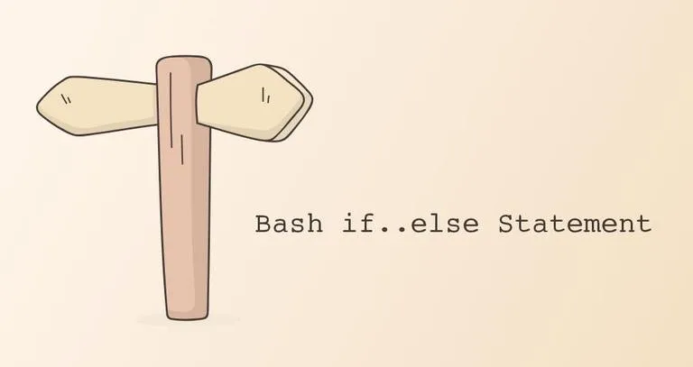

在本篇教程中，我们会逐步深入 Bash 中的 if 语句基础，带着大家一起学习如何在 Shell 脚本中使用 if 语句。
决策，计算机程序中的一个最基础的要素。就如同其他的编程语言一样，通过使用 if、if..else、if..elif..else 以及嵌套 if 语句，我们可以在 Bash 中基于特定条件执行对应的代码。
if 语句Bash 中的 if 条件语句拥有不同的实现格式。例如最基本的形式：
if TEST-COMMAND
then
STATEMENTS
fi
if 语句由 if 关键字引导，接上一段条件表达式，然后是 then 关键字，并以 fi 关键字结束。
如果 TEST-COMMAND 执行后为真，那么相应地， STATEMENTS 就会被执行；而如果为假，则 STATEMENTS 会被忽略。
大多数情况下，（在原文件中）保持你的代码拥有优秀的缩进及空行，可是个很好的习惯，能让你的代码具有更强的可读性和组织性结构性。大多数人都是用 4 个空格或 2 个空格的缩进。
让我们看看如下用于检查给定数字是否大于 10 的一段代码：
#!/bin/zsh
echo -n "输入一个数字："
read VAR
if [[ $VAR -gt 10 ]]
then
echo "该变量大于 10。"
fi
保存上面的代码并在命令行中执行它：
# 注意，在运行该段代码前，你可能需要先赋予其相应权限。
# chmod +x test.sh
# ./test.sh
bash test.sh
这段脚本会要求你输入一个数字，举个例子，如果你输入了 15，那么 TEST-COMMAND 即 [[ $VAR -gt 10 ]] 等同于真，然后 then 分句中的 echo 语句就会被执行。
因此上述代码的输出是：
该变量大于 10。
if..else 语句Bash 中的 if..else 语句是这个样子的：
if TEST-COMMAND
then
STATEMENTS1
else
STATEMENTS2
fi
如果 TEST-COMMAND 为真，那么 STATEMENT1 会被执行；而如果为假，那么 STATEMENT2 就会被执行。对于每一个 if 语句，只能有一个 else 语句与之对应。
让我们给上一个例子加一个 else 语句：
#!/bin/bash
echo -n "输入一个数字："
read VAR
if [[ $VAR -gt 10 ]]
then
echo "该变量大于 10。"
else
echo "该变量小于等于 10。"
fi
如果你执行上述代码并输入一段数字，脚本会给予你输入的数字与 10 之间的大小关系输出不同的信息。
if..elif..else 语句Bash 的 if..elif..else 语句是这样子的：
if TEST-COMMAND1
then
STATEMENTS1
elif TEST-COMMAND2
then
STATEMENTS2
else
STATEMENTS3
fi
如果 TEST-COMMAND1 条件为真，那么 STATEMENTS1 就会被执行。若为假，则继续如下判断：如果 TEST-COMMAND2 条件为真，那么 STATEMENTS2 就会被执行。否则，STATEMENTS3 将会被执行。
你可以拥有一个或多个 elif 语句在一段语句中，而 else 则是可有可无的。
这些条件判断语句是按顺序执行的，一旦其中一个条件从句是真，那么剩下的判断都不会执行，并且程序会在执行完语句以后，直接跳转到 if 整个段落的末尾，执行下一段代码。
让我们给上一个例子添加 elif 语句吧：
#!/bin/bash
echo -n "输入一个数字："
read VAR
if [[ $VAR -gt 10 ]]
then
echo "该变量大于 10。"
elif [[ $VAR -eq 10 ]]
then
echo "该变量等于 10。"
else
echo "该变量小于 10。"
fi
if 语句Bash 允许在一个 if 语句中嵌套一个或多个if 语句。
下面的脚本会要求你输入三个数字，然后会打印其中最大的数字：
#!/bin/bash
echo -n "输入一个数字："
read VAR1
echo -n "再输入一个数字："
read VAR2
echo -n "再再输入一个数字："
read VAR3
if [[ $VAR1 -ge $VAR2 ]] && [[ $VAR1 -ge $VAR3 ]]
then
echo "$VAR1 是最大的数字。"
elif [[ $VAR2 -ge $VAR1 ]] && [[ $VAR2 -ge $VAR3 ]]
then
echo "$VAR2 是最大的数字。"
else
echo "$VAR3 是最大的数字。"
fi
而输出就是这样子的：
7 是最大的数字。
一般来说，使用 case 语句比使用 if 语句更高效。
逻辑运算符 OR 和 AND 能够让你在一条 if 语句中使用多重条件。
下面就是获取三个数中最大数字的另一种写法，而在这个版本中，我们用了逻辑 AND（&&） 运算符而非嵌套 if 语句。
#!/bin/bash
echo -n "输入一个数字："
read VAR1
echo -n "再输入一个数字："
read VAR2
echo -n "再再输入一个数字："
read VAR3
if [[ $VAR1 -ge $VAR2 ]] && [[ $VAR1 -ge $VAR3 ]]
then
echo "$VAR1 是最大的数字"
elif [[ $VAR2 -ge $VAR1 ]] && [[ $VAR2 -ge $VAR3 ]]
then
echo "$VAR2 是最大的数字"
else
echo "$VAR3 是最大的数字"
fi
test 操作在 Bash 中，test 语句可以长这样的：
test EXPRESSION [ EXPRESSION ] [[ EXPRESSION ]]
为了使我们的脚本可移植，最好使用兼容所有 POSIX shell 的旧版本 [ …… ]语句。使用 Bash、Zsh、Ksh 作为默认 shell 的大多数现代系统都支持 [[ …… ]]（双括号）新版语法。
要否定测试表达式，请使用逻辑 NOT（!）运算符。在比较字符串时，请始终使用单引号或双引号，以避免单词拆分和乱码问题。
以下是一些最常用的运算符：
n VAR —— 如果 VAR 的长度大于零，则为真。z VAR —— 如果 VAR 为空，则为真。STRING1 = STRING2 —— 如果 STRING1 和 STRING2 相等，则为真。STRING1 != STRING2 —— 如果 STRING1 和 STRING2 不相等，则为真。INTEGER1 -eq INTEGER2 —— 如果 INTEGER1 和 INTEGER2相等则为真。INTEGER1 -gt INTEGER2 —— 如果 INTEGER1 大于 INTEGER2，则为真。INTEGER1 -lt INTEGER2 —— 如果 INTEGER1 小于 INTEGER2，则为真。INTEGER1 -ge INTEGER2 —— 如果 INTEGER1 等于或大于 INTEGER2，则为真。INTEGER1 -le INTEGER2 —— 如果 INTEGER1 等于或小于 INTEGER2，则为真。h FILE —— 如果 FILE 存在并且是符号链接，则为真。r FILE —— 如果 FILE 存在并且可读，则为真。w FILE —— 如果 FILE 存在且可写，则为真。x FILE —— 如果 FILE 存在且可执行，则为真。d FILE —— 如果 FILE 存在并且是目录，则为真。e FILE —— 如果 FILE 存在并且是一个文件并且不管它的类型（不管是节点、目录还是 socket），则为真。f FILE —— 如果 FILE 存在，并且是常规文件（不是目录或设备什么的） ，则为真。if、if..else 和 if..elif..else 语句让我们能够基于不同的判断条件来控制 Bash 脚本中逻辑语句的执行。
如果你有任何疑问或反馈，请随时发表评论。
如果发现译文存在错误或其他需要改进的地方，欢迎到 掘金翻译计划 对译文进行修改并 PR，也可获得相应奖励积分。文章开头的 本文永久链接 即为本文在 GitHub 上的 MarkDown 链接。
掘金翻译计划 是一个翻译优质互联网技术文章的社区，文章来源为 掘金 上的英文分享文章。内容覆盖 Android、iOS、前端、后端、区块链、产品、设计、人工智能等领域，想要查看更多优质译文请持续关注 掘金翻译计划、官方微博、知乎专栏。